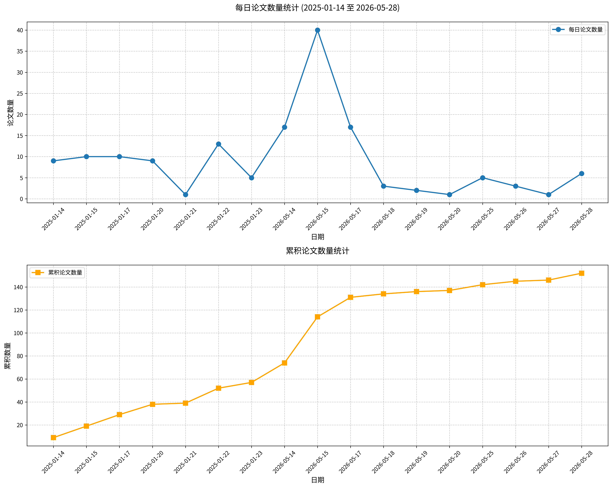

原文标题： Intimate partner femicide, understanding perpetrator behaviour: a cross-cultural analytical review of weapon choice, injury patterns, and cultural-criminological insights.
摘要： 亲密伴侣杀害女性（IPF）是长期性别暴力的致命后果，通常由控制欲、嫉妒和情绪不稳定驱动，而精神疾病或物质滥用仅在少数案例中被报告。受害者通常遭受多年虐待，因恐惧、孤立或依赖而面临巨大障碍难以逃脱。与非亲密伴侣杀害女性（NIPF）不同，后者施暴者与受害者没有密切关系。文化和地区因素影响杀害女性的发生和处理方式。本叙述性综述结合系统性文献检索，旨在综合不同国家亲密伴侣杀害女性的流行病学、犯罪学和法医学模式，重点关注受害者和施暴者特征、常见尸检发现、风险因素及文化差异。遵循PRISMA声明，收集了来自多个国家的16项关于杀害女性流行病学和犯罪学的研究。在美国，大多数IPF案件涉及先前虐待，枪支是最常见的武器。勒颈、钝器伤和中毒在低中等收入国家更为常见，这些国家有更严格的枪支法律。精神问题和物质滥用（尤其是酒精）是主要风险因素，5-10%的施暴者受精神障碍影响，15-20%存在慢性物质使用问题。IPF的风险因素包括年轻女性（30-50岁），通常有工作，被长期伴侣杀害，且存在先前暴力。风险在关系结束后最高，尤其是第一年内。暴力常发生在受害者住所，施暴者在此展示支配力。嫉妒是关键动机，升级为暴力作为控制工具，并在父权社会中常被视为合理。综述强调需要针对这些风险的预防策略，包括改善心理健康护理、物质滥用治疗及对受害者的支持。尸检发现突出了杀害女性案件中的常见伤害，如刺伤、头部伤害和防御伤。这些伤害结合其他暴力手段（如勒颈），表明暴力的升级，是理解杀害女性动态的关键。研究强调持续研究和数据收集的重要性，以改善预防和受害者支持系统，旨在全球降低IPF发生率。
关键词： 亲密伴侣杀害女性；施暴者行为；文化犯罪学；风险因素；情绪不稳定
论文链接： PubMed
原文标题： The significance quest model of love does not make evolutionary sense.
摘要： 克鲁格兰斯基的“意义追寻”爱情模型声称是功能主义的，但它只将一种积极情绪（坠入爱河）解释为感受另一种积极情绪（感到有意义）的方式，而未解释为何后者应被视为比前者更基础或更重要。从进化角度看，该模型缺乏合理性，甚至在描述层面也显得不一致。
关键词： 爱情模型；意义追寻；情绪；进化心理学；浪漫关系
论文链接： PubMed
原文标题： Love as a lived experience.
摘要： 针对评论意见，我们完善并扩展了“价值-欣赏”（M-A）爱模型。该模型的修订版本强调了其在不同个人与生活情境下的灵活性，具体而言：（1）对伴侣“价值”与“欣赏”的侧重可能随人生阶段及个体自身的价值感而变化；（2）特定恋爱关系的新奇性增强了双方从中获取的意义；然而，他们在新奇领域中的共同体验可能重燃这种意义；（3）某段浪漫爱作为意义来源的权重，可能取决于其他意义来源（如工作/职业及替代性关系）的可得性。后者可能因文化而异，某些文化（如传统文化）可能将替代性关系安排（如包办婚姻）视为意义来源。尽管其普遍性或有不同，但证据表明，浪漫爱是一种跨社会和跨文化的普遍体验。我们认为M-A爱模型与进化理论或目标理论等更广泛的概念框架兼容，但同时占据独特的理论定位与分析层次，使人们能够洞察爱作为一种充满变迁的生活体验。该模型揭示的理解为应对爱的“考验与磨难”提供了路径，以减轻其可能带来的痛苦，并增强其促进幸福与福祉的潜力。
关键词： 浪漫爱；价值-欣赏模型；意义感；跨文化体验；生活体验
论文链接： PubMed
原文标题： Computational models of social cognition should incorporate social relationships as core primitives.
摘要： 关系基元可以促进超越个体心理状态推理的快速归纳概括。社会认知的计算模型应将社会关系作为核心基元，从而为解释如何通过最小的社会观察产生灵活、高效且具有文化适应性的社会预测提供更丰富的理论基础。
关键词： 社会认知；计算模型；社会关系；基元；社会预测
论文链接： PubMed
原文标题： Staff Perceptions of Patient Interactions in Subacute/Post-Acute Nursing Home Units: A Qualitative Study.
摘要： 目的：本研究探讨了短期护理养老单元中多学科工作人员对医患互动影响的感知。方法：我们对32名具有亚急性/后期护理经验（如护理、治疗）的养老院工作人员进行了五次焦点小组讨论。两名独立编码员采用主题分析法对定性数据进行分析。结果：共提炼出四个主题：短期住院患者的高情绪表达；临床护理团队对患者情绪的理解；患者与工作人员之间的情绪双向交换；以及应对情绪是工作/职场的正常部分。结论：医患互动给工作人员带来了负面（如情绪耗竭、冒名顶替综合征）和正面（如患者感激）体验。参与者描述了工作人员与患者情绪之间的双向关系。研究结果可能有助于识别加强工作人员和患者人际效能及情绪调节的机会，以及改善单元文化和组织支持（如社会支持、灵活分配、心理服务）的策略。
关键词： 情绪表达；情绪感知；医患互动；情绪耗竭；人际关系
论文链接： PubMed
原文标题： Heart-brain axis dysregulation in PTSD mice: Vagal-mediated insular cortex hyperactivity and its reversal by propranolol.
摘要： 背景：虽然大脑连接异常是创伤后应激障碍（PTSD）的核心机制，但交感神经驱动的心脏功能障碍也会发生。鉴于心脏对大脑功能的调节作用及其在精神疾病中的已知重要性，本研究旨在阐明心脑连接在PTSD发病机制中的作用。 方法：采用单次延长应激（SPS）诱导的雄性C57BL/6J小鼠PTSD模型。通过行为测试评估焦虑和恐惧样行为，利用心电图、在体电生理和免疫荧光检测心脏功能和岛叶皮层兴奋性。慢性异丙肾上腺素（ISO）处理模拟交感神经心脏过度激活，左侧颈部迷走神经切断术测试心脏至岛叶通路，并评估普萘洛尔的治疗效果。 结果：SPS和慢性ISO处理均显著增加小鼠心率并诱导明显的PTSD样行为。电生理和免疫荧光分析显示，SPS和ISO处理后岛叶皮层神经元的兴奋性显著增强，表现为c-Fos阳性神经元增加、局部场电位功率谱密度升高以及频带分布改变。迷走神经切断术阻断了ISO诱导的心动过速和行为效应，确认迷走神经是关键的信号传导通路。此外，普萘洛尔有效降低了心率、抑制了岛叶皮层神经元过度激活和异常振荡活动，并显著减轻了SPS小鼠的PTSD样行为。 结论：本研究强调了心脏-岛叶皮层功能相互作用在PTSD发病中的关键作用，该作用由迷走神经传递交感神经驱动的心脏信号介导，导致岛叶皮层过度活跃和行为异常。普萘洛尔靶向这一通路，显示出治疗潜力，并为PTSD心脑机制提供了新见解。
关键词： 创伤后应激障碍；心脑轴；岛叶皮层；迷走神经；普萘洛尔
论文链接： PubMed
